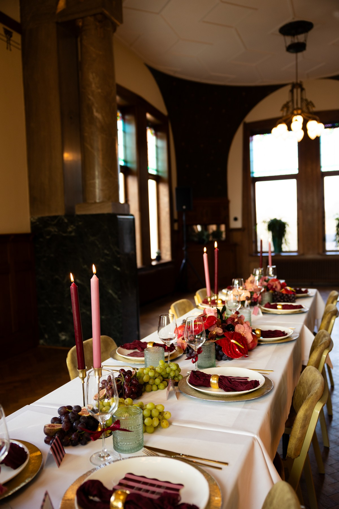
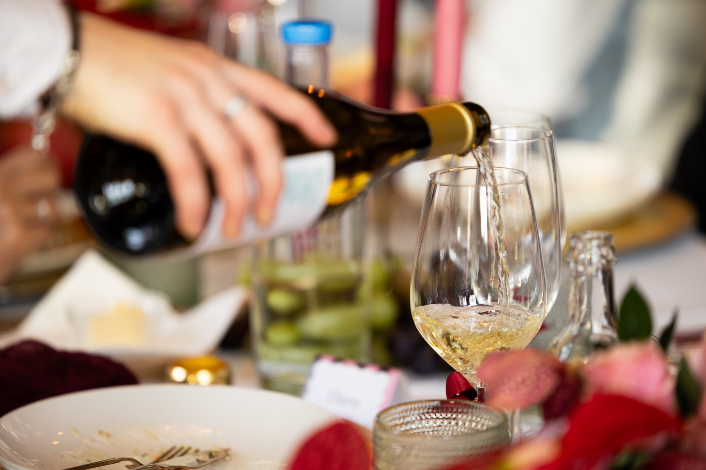
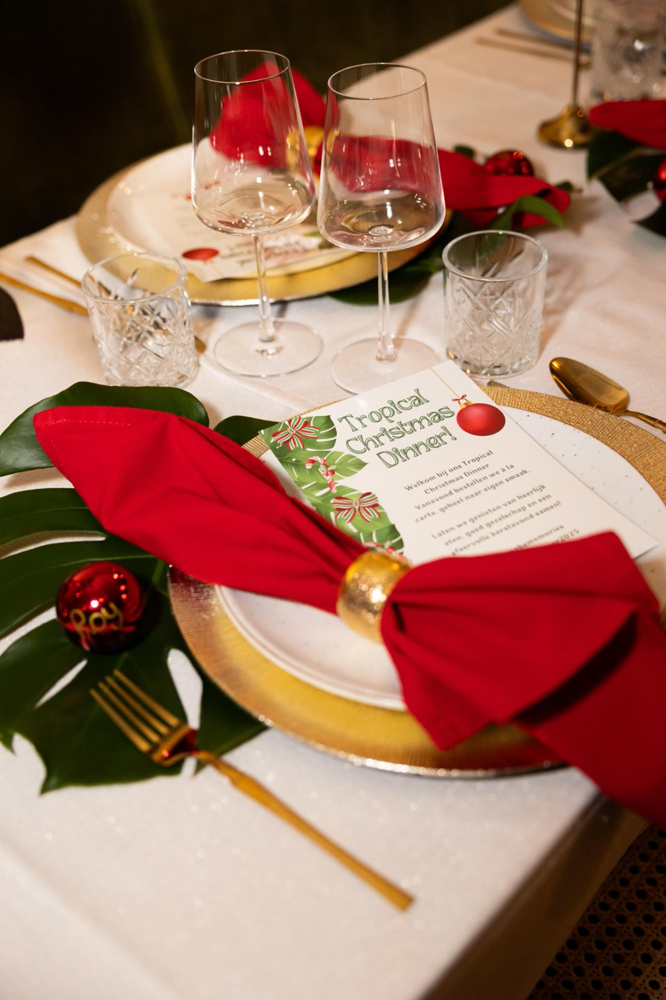
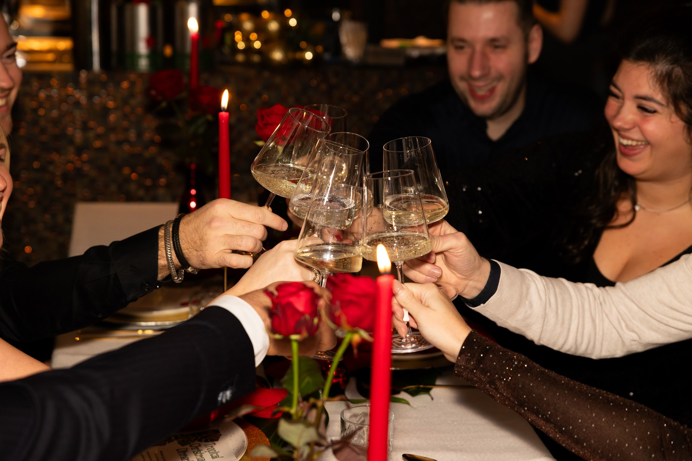
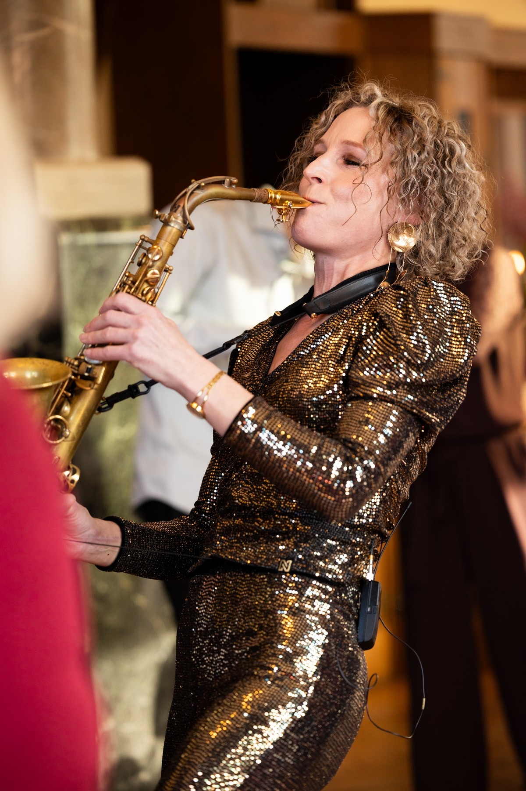

Een moment dat klopt
Sfeer, styling en licht die samen een verhaal vertellen.
Belevenissen voor merken
Fluweel vertaalt jouw merk en je verhaal naar een moment dat gasten blijven navertellen. Persoonlijk bedacht, verrassend uitgevoerd en tot in het kleinste detail verzorgd.





Fluweel verbeeldt een gevoel en bouwt het na, tot in het kleinste detail.
Het verhaal achter Fluweel
Fluweel ontstond vanuit een liefde voor het detail. De juiste muziek op het juiste moment, een dessert waar nog dagen over wordt gepraat, een binnenkomst die gasten heel even stil maakt. Voor die momenten leeft Fluweel.
Fluweel vertaalt de identiteit van jouw merk naar een beleving die gasten voelen en onthouden. Van het eerste idee tot de laatste gast werk je samen met een klein, creatief team en een vast gezicht dat je leert kennen.
Fluweel organiseert een herinnering. En dat gebeurt persoonlijk, bij de koffie begint het al.
Werkwijze
Een vaste route met alle ruimte voor het verrassende. Je weet altijd waar het project staat en wat de volgende stap is. Tik een fase aan en lees wat er gebeurt.
Het begint met een goed gesprek. Wat wil je bereiken, voor wie organiseer je dit, en wat moeten gasten voelen als ze naar huis gaan? Fluweel duikt in je merk, je doel en je verhaal, zodat alles wat volgt daarop rust.
Fluweel komt terug met een concept dat alleen bij jou past, inclusief een heldere planning en een transparante begroting. Hoe origineler het idee, hoe enthousiaster Fluweel wordt. Ruimte voor het gedurfde zit standaard in elk voorstel.
Locatie, techniek, catering, styling, gasten en draaiboek: alles wordt op elkaar afgestemd. Fluweel houdt de touwtjes in handen, jij houdt overzicht en rust in de aanloop naar de dag.
Op de dag zelf staat Fluweel paraat op de achtergrond, met dat ene moment dat niemand zag aankomen. Dat is wat gasten later als eerste navertellen.
Events
Elk evenement is anders. In deze vormen komt Fluweel het sterkst tot zijn recht.
Een merk dat de wereld in gaat, gedragen door een moment dat blijft hangen.
Kaarslicht, verfijning aan tafel en een zaal die glinstert.
Tijd en aandacht voor de mensen die ertoe doen.
Een mijlpaal vieren met energie die nog weken voelbaar is.
Ook een persoonlijke mijlpaal verdient een herinnering. Voor een bruiloft, een jubileum of een verjaardag met allure denkt Fluweel net zo graag met je mee.
Vertel eroverWerk
Hier verschijnen de eerste projecten met beeld. Een voorproefje van het soort momenten dat Fluweel maakt.
Sfeer, styling en licht die samen een verhaal vertellen.
De zorg die niemand ziet, maar iedereen voelt.
Waar gasten na afloop nog over napraten.
Wat opdrachtgevers zeggen
Onze gasten praten er weken later nog over. Precies het gevoel waar we op hoopten.
Alles klopte, tot de servetten aan toe. Wij konden alleen maar genieten.
Fluweel vertaalde ons merk naar een moment dat echt van ons was.
De verrassing halverwege het diner, daar praat het hele kantoor nog over.
Persoonlijk, creatief en tot in de puntjes verzorgd. Volgend jaar weer.
Van het eerste gesprek tot de laatste gast voelde het vertrouwd.
Veelgestelde vragen
Voor een uitgewerkt concept werkt Fluweel het liefst met enkele maanden voorbereiding. Is de agenda krapper? Vertel het gerust, vaak kan er meer dan je denkt.
Ja. Fluweel verzorgt het volledige plaatje: locatie, techniek, catering en styling. Jij hebt één vast aanspreekpunt dat alles op elkaar afstemt.
Zeker. Fluweel organiseert op de plek die het beste bij jouw verhaal past, waar dat ook is.
Heel graag. Ligt er al een richting, een moodboard of een Pinterest-bord? Fluweel bouwt daarop voort en maakt het samen met jou compleet.
Elk event van Fluweel is maatwerk, dus de investering hangt af van jouw wensen. In een kort gesprek weet je precies waar je aan toe bent.
Contact
Vertel over jouw moment. Fluweel denkt graag met je mee, vrijblijvend en met alle aandacht. De koffie staat klaar.
+31 (0)00 000 0000of mail naar contact@fluweelevents.nl